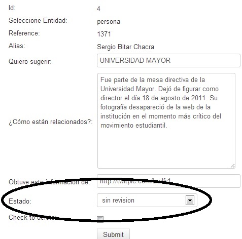

From the Poderopedia administrator you can manage suggestions or user collaborations:
1. - To manage the suggestions you have to go to the Suggestion Menu (Fig. 55) and select one of the following options: Connections, I have Data, Suggest Person, Error or Inappropriate Content
2. - Selecting one of them will display a grid (Fig. 56) where you can:
View ,
Edit
,
Edit ,
delete
,
delete ,
or search for a collaboration with the appropriate criteria.
,
or search for a collaboration with the appropriate criteria.
(Fig.
56) 
3.
- In the  option you can see the suggestion sent by a user and assign a state
to it (Fig. 57).
The states are: Without revision, rejected and Accepted/on course /
Assigned.
option you can see the suggestion sent by a user and assign a state
to it (Fig. 57).
The states are: Without revision, rejected and Accepted/on course /
Assigned.
(Fig.57)
